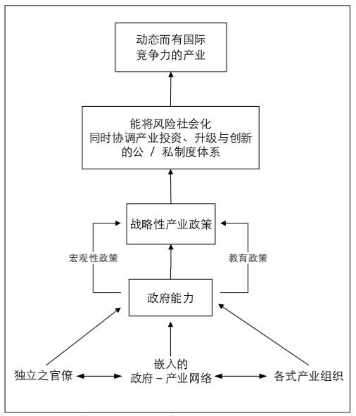

收录于合集
【内容提要】 “发展型国家”理论自20世纪80年代问世以来，向来是解释东亚经济成就的主要论述，但也遭逢其它理论学派的挑战与质疑。本文用论争的方式梳理理论的发展，借由国家与市场、社会、全球化等视角的辩论，阐述发展型国家理论的起源、演变与展望。本文认为，发展型国家学派早期呈现“国家中心论”的观点，经过辩论与融合之后，已演变成关注“国家－社会”关系、更具解释力的理论。但在内外环境变迁，特别是全球化潮流的冲击下，东亚各经济体纷纷进行调适与转型。如何超越当前“后发展型国家”多样性的状态，在理论上打造出新的“东亚模式”，甚至为东亚之外的其他地区提供发展指引，就成为发展型国家理论往前迈进的挑战。
【关键词】 国家中心论；国家－社会关系；全球化
作者简介： 黄宗昊，台湾政治大学政治学博士、中国台湾“中央研究院”政治学研究所博士后研究员、上海交通大学国际与公共事务学院比较政治系讲师，微信公众号“历史制度主义研究”创办人。
一、前言
在解释东亚的经济发展上，有关“发展型国家”（developmental state）的理论观点始终位居核心。支持者盛赞东亚各经济体的有为政府创造出经济奇迹，反对者尽管不以为然，但也得先阐明有关发展型国家的看法之后方能大加批评，如认为发展型国家理论已成为讨论东亚政经的起点应不为过。值得注意的是，发展型国家的理论观点并非一成不变，自20世纪80年代出现以来，其内涵已随着时代演进而不断进行调整。因此，发展型国家理论并非只是出于一时、一地、一人之手的单一观点，而是由不同时空的多位学者集体耕耘而成的理论园地，也许用“学派”来称呼发展型国家理论的整体，会是一个较合适的界定方式。
建构理论的目的，是为了有效解释经验现象。但在理论发展的过程中，常常无可避免地遭遇两大挑战。一是理论的“时滞”（time lag）问题。经验现象出现在先，理论观点出现在后，在理论观点发展成熟之际，所欲解释的经验现象往往已发生了变化，使得理论常只能解释历史，难以适用于当下，更遑论能展望未来了。另一则是理论内涵“简约”（parsimony）与“详实”（complexity）的价值取舍。理论的内涵简约，观点与立场明确，能扩大适用的时空范围，但容易招致以偏盖全、错误解释的批评。理论的内涵详实，能较完整地解释特定的经验现象，但观点往往需要妥协折衷，仅能适用于特定或少量案例，难以扩大运用的范围。经验理论的内涵常只能在简约与详实之间取舍，很难两全其美。
本文即从上述“理论的时滞与否”以及“理论内涵简约与详实的取舍”等两个视角，评析发展型国家理论在不同阶段所呈现的面貌。另一方面，本文将透过“论争”的方式，探讨发展型国家理论如何进行经验现象与理论解释之间的动态连结。自20世纪80年代以降，发展型国家学派与不同理论观点之间先后历经“市场vs.国家”、“国家vs.社会”、“国家vs.全球化”等论辩，并在过程中不断充实内涵，调整理论的发展方向。本文借由论争的方式来梳理理论的发展，并从两个不同视角对理论的状态进行评析，希望能完整地勾勒出发展型国家理论的起源、演变与展望。
本文认为，发展型国家理论早期呈现“国家中心论”的观点，在纳入“社会中心论”的看法后，已演变成关注“国家－社会”关系、更具解释力的理论。但在内外环境变迁，特别是全球化潮流的冲击下，东亚各经济体纷纷转型，逐渐进入“后发展型国家”的阶段。如何总结东亚各经济体的转型经验，打造出新的“东亚模式”，甚至进一步为东亚之外的其他发展中地区提供理论指引，将成为发展型国家理论进一步发展的重点。
本文以下分为四个部分。第一部分说明发展型国家理论的起源，是来自新古典经济学解释东亚经济发展的局限性，此时的发展型国家理论主要呈现“国家中心论”的面貌。第二部分指出发展型国家理论的演变动力，是来自民主化现象与“社会中心论”者的抨击。将这些批评整合进理论意涵中，新一代理论的焦点，已转变为关注“国家－社会”关系。第三部分思考发展型国家理论今后的展望。东亚的发展型经济体本就是特定时空下的产物，在全球化的潮流冲击下纷纷转型，理论的走向该何去何从，值得深思。最后一部份，提出综合性的观察与评析作为结论。
二、起源：市场vs.国家
－发展型国家理论1.0版
“发展型国家”的理论起源，可以从经验现象与理论解释的两个脉络加以理解。从经验现象而言，主要是基于东亚地区在第二次世界大战之后的经济高速增长。特别是在20世纪70年代，欧美资本主义发达国家都因布雷顿森林体系（Bretton Woods System）的崩解和两次石油危机的冲击而经济大幅衰退，但东亚地区非但没有衰退，反而逆势增长，取得了举世羡慕的经济成就。
世界银行（World Bank）在1993年特别出版了专书《东亚经济奇迹》（The East Asian Miracle），表示主导发展的国际组织对东亚成就的正式肯定。书中指出，东亚在1965年到1990年间是每人国民生产总值（GNP per Capita）平均增长率在世界上最高的区域；中国台湾地区、韩国与日本在1965年到1985年间每人国内生产总值（GDP per Capita）的增长率分别位居世界的第二、第六与第七位。书中的标题也强调，东亚奇迹的本质在于“带有公平的高速增长”（Rapid Growth with Equity），除了高速且持续的增长，同时又能结合高度平均的所得分配，尤其难能可贵。
在经验现象的特殊性逐渐浮现之际，既有的理论观点并没有在第一时间给予适当的解释。主导发展领域的理论观点，最早是20世纪50年代的“现代化理论”（modernization theory），以及在20世纪60年代后期影响渐增的“依赖理论”（dependency theory）与“世界体系理论”（world system theory），主要的经验研究对象都是拉丁美洲。前者西方中心论的色彩明显，既然难以适用于拉美，运用在东亚也会碰到类似的问题。后者擅长解释的是依赖与不发展，相较于拉美的困境，东亚却是在相同的国际环境中发展起来的；虽然也有学者运用“依赖发展”（dependent development）的观点说明东亚经验，但强调的多半是东亚地区在国际制约下的困境，同样难以正面解释东亚经济发展的成就。
最先对东亚地区经济发展提出解释，反倒是新古典经济学派的经济学家。他们认为，由于经济体的自然禀赋不同，如要达成全球资源最有效率的配置，也应该借助市场机制“一只看不见的手”（an invisible hand）来引导，所以主张没有进出口管制的自由贸易。一来，发展中国家应用其自然资源和充裕劳工以交换先进国家的工业技术和资本，彼此都能达到帕累托最优（Pareto efficiency）的结果。再者，自由化可以借由竞争以提高效率，尤其应避免政府介入而扭曲了市场机能。因此，东亚地区的经济成就，就是实行了自由主义经济政策所得之结果，借由比较利益原则与自由贸易的国际分工体系，以及透过价格机制的市场运作，能增进效率和利益，达成经济发展的目标。
这些新古典经济学派的研究，特别是以巴拉萨（Bela Balassa）在1982年主编的著作为代表，反映出主导发展的国际组织——世界银行的观点。世界银行强调东亚的经济成功，是由于遵循市场逻辑、参与国际贸易而来，借此驳斥拉美国家所推动，有关重工业的进口替代工业化的政策作为不当。此种“市场中心论”的观点，可说是先前现代化理论的国际版本；现代化理论中所包含的社会经济决定论，借由国际组织的鼓吹又卷土重来了。
然而，新古典经济学派对东亚发展的解释存在着许多问题。首先，在理论的内部矛盾上，自由贸易下的国际分工也可能增加了发达国家和发展中国家在资本和技术上的鸿沟，反而会使发展中国家趋向低度发展。因此，断言基于比较利益的国际分工能带动发展中国家的经济成长，是不无矛盾的。其次，新古典经济学派着重强调市场机能和自由贸易，但对于许多经济体并未完全实行这些主张，尤其东亚地区几乎都采取高度进口管制，何以仍然有如此的经济成就，并未作出说明。支持其观点的经验证据有所偏颇和不足。最后，同时也是最为关键的缺失在于：整个新古典经济学派的看法是去政治的（apolitical），刻意排除了“政府”的角色，忽略了政府对内是市场的监督者，对外则是国际分工和贸易主体的事实，这也与东亚经验的特色背道而驰。
因此，从政治观点出发，并强调政府角色的“发展型国家”学派在20世纪80年代初期应运而生。“发展型国家”的概念起源自约翰逊（Chalmers Johnson）在1982年的经典著作《通商产业省与日本奇迹》（MITI and the Japanese Miracle），从政府成功推动产业政策、扶植策略性产业来解释日本经济的高速增长，并特别关注“通商产业省”（Ministry of Commerce and Industry, MITI）在此过程中所扮演的角色。
当时仍处于美苏冷战的格局下，约翰逊著作的时代意义表明，发展的模式并未定于一尊。约翰逊将美国的市场经济称为“市场－理性”（market- rational）模式，苏联的计划经济称为“计划－意识型态”（plan- ideological）模式；日本经济的成功发展，是走出折衷于美、苏之间的第三条路，可称为“计划－理性”（plan- rational）模式。一方面，政府积极引导经济发展，落实在产业政策的“计划”之中；另一方面，政府以顺应市场规律的方式干预经济，不走意识型态的极端，体现出“理性”的特征。
借由观察日本从20世纪20年代到70年代如何引导经济发展，约翰逊归纳出日本模式的四个成分。首先，要有一批规模不大、所费不高，但具有充分管理才能的精英官僚。其次，政治体系要给予这批精英官僚足够的政治空间，以便他们有效运作。第三，政府需采取“顺应市场”（market- conforming）的方式干预经济。最后，需要有一个如同日本通商产业省般，引导经济发展的领航组织（pilot organization）。
约翰逊的这本著作为后续的研究者带来双重的影响。一方面，如同约翰逊自己所言，这本书对日本通商产业省在特定时期内如何制定产业政策进行了历史考察，撰写的初衷是为了突显各个资本主义经济体之间的差异而非类似之处。所以约翰逊所撰写的，实质上是一个有关日本发展经验的案例研究，虽然提出了“发展型国家”的概念，但并未有意识地进行理论建构的工作。
另一方面，约翰逊在著作的最后归纳出了“日本模式”，这给予后续研究者相当大的启发。从此以后，找出东亚经验案例的成功条件，经过抽象化之后建构出发展型国家的“理想类型”（ideal type），就成为许多东亚政经研究者从事理论建构的常见手法。约翰逊的这本书也就从解释案例的特殊性，转而带有阐述普遍性通则的味道，并成为发展型国家学派的开山之作。从约翰逊开始，尝试建构发展型国家理想类型的成果，本文将它们统称为“第一代发展型国家理论”，或“发展型国家理论1.0版”。
对有关发展型国家理想类型的探讨，以郑为元的整理最为完备。他将构成发展型国家的条件按照“是否会重复出现”、“功能机制或权力机制”两面向区分成四类：普遍性（重复－功能机制）、阶段性（不重复－功能机制）、权变性（重复－权力机制）、历史性（不重复－权力机制）。然后他将以往研究的重要成果，纳入前述的分类架构，就可以整理成表1。这些研究成果包括约翰逊、阿姆斯登（Alice Amsden）、韦德（Robert Wade）等人的著作，与怀特（Gordon White）、奥尼斯（Ziya Onis）、莱夫特威克（Adrian Leftwich）等人的论文。
表1 部分代表性研究的发展型国家特征
资料来源：郑为元：《发展型“国家”或发展型国家“理论”的终结？》，第22页。
从表1就可清楚看出，在发展型国家理论1.0版中，各家看法最具有共识的部分，是有关普遍性条件的“优秀官僚”与“国家自主性”，以及部分阶段性条件和历史性条件，包括“经济计划机关”、“适度干预市场”和“国家对外资自主”等。关于其它的阶段性条件、权变性条件与历史性条件，则各家强调的重点有所不同。此种由东亚经验所归纳出的第一代发展型国家理论，在对经验案例的解释上，遭逢了极大的挑战，在跨越时空的适用性方面，也浮现了隐忧。
从经验案例的解释而言，发展型国家理论1.0版的核心，可以说是普遍性条件的“优秀官僚”与“国家自主性”，认为由此两者所构成的“发展型国家”，有效推动了在特定阶段适当的政策，导致了东亚经济成功发展。此种理论观点符合“简约”的要求，因果解释的立场相当明确，也因此常被其它地区的研究者借鉴以说明该地区的发展与否。但与此同时，此种观点又因反映出强烈的“国家中心论”色彩，而遭到“社会中心论”者的强烈抨击，认为发展型国家理论1.0版只是对东亚经济发展的一偏之见。在两派学者的论争与对话下，批评反成为推动理论发展的动力，发展型国家学派逐渐超越了先前的论述，发展出了强调“国家－社会”关系的新一代理论。
就理论的适用性而言，东亚地区所出现的发展型经济体本就是特定时空下的产物。观察各家所归纳出的理想类型，除了普遍性条件作为共同的核心之外，都必须加入不完全相同的阶段性、权变性与历史性条件方能支持理论的有效解释。一旦移出了特定的时空环境，这些阶段性、权变性与历史性条件不复存在，“发展型国家”导致经济发展的理论观点能否成立，是令人高度存疑的。即使暂不考虑空间的变异性，只针对东亚地区本身而言，在发展型国家理论蓬勃发展的20世纪80年代，韩国与中国台湾地区的民主化已现端倪，全球化的风潮也在逐步酝酿，这些趋势都在侵蚀发展型国家理论得以成立的前提。因此在发展型国家理论欣欣向荣之际，作为理论基础的经验现象已在缓缓变动，使得理论能继续适用的时间有限，产生“理论时滞”的问题。
三、演变：国家vs.社会
－发展型国家理论2.0版
发展型国家理论的演变动力，同样可以从经验现象与理论解释的两个脉络加以观察。先从经验现象来看。在20世纪80年代中期之前，日本长期由一党执政，韩国和中国台湾地区则处于威权统治之下。长期的政治稳定提供了经济发展必要的政治基础，政府得以运用自主性与能力追求经济成长，创造了“东亚奇迹”。发展型国家理论1.0版即试图抽象地描绘这一个经验现象。但矛盾的是，正当理论成形之际，所解释的经验现象却已随时代而改变。造成东亚地区政经变迁的主要动力，来自民主化以及全球化。首先造成影响的潮流是民主化。
在20世纪80年代中期之后，韩国与中国台湾地区出现民主化的趋势，在经历多场选举之后，最终于20世纪90年代完成。与此同时，日本也在1993年终结了自由民主党（Liberal Democratic Party）长期执政的“五五体制”，实现近四十年来首度政党轮替执政。东亚以往支持发展型经济体的政治基础已不复存在。
民主化对发展型经济体最主要的冲击有二种：首先，民主化之后能否持续执政要以选举决定，为了尽可能扩大选票基础，政治领袖必须将各种社会需求纳入施政考虑。经济发展非但不是唯一考虑，甚至也不见得是第一考虑，这就让以往发展型国家的思维与政策难以为继。其次，民主化也让社会组织逐步扩大与政府之间的议价空间，社会不再只是被国家所领导、所决定，开始积极表达自己的偏好与需求。民主化让社会力崭露头角，并不断提升重要性，相对地也挑战了政府的自主性和能力。在经验现象变动之际，新一轮“国家vs.社会”的论争也随之展开。
另方面，就理论解释而言，发展型国家理论的起源，可以放在当时“把国家带回来”（bring the state back in）的学术风潮下加以理解。在20世纪80年代，一批学者对于美国主流政治学所流行的多元主义（pluralism）和结构功能主义（structural functionalism）提出了批评，认为这两种学术观点都有着“社会中心论”的偏失，误以为国家只是被动地服务于社会的需求，忽略了国家有其不同于社会的偏好和自主性，因而这批学者大声疾呼要将“国家”带回政治分析的核心位置。
发展型国家理论正是这一波学术风潮之下的产物，但却有走向“国家中心论”的极端立场的危险。发展型国家理论1.0版的核心观点认为，由“优秀官僚”与“国家自主性”所构成的发展型国家，能够有效推动政策，因而造就东亚地区的经济成就。前述韦德在1990年的经典著作《驾驭市场》（Governing the Market），可谓深得此种想法之精髓。但过犹不及，一味强调国家自主性与国家能力的结果，隐含着政府可脱离社会脉络而有效运作，忽略了国家与社会之间的连结，这也让主张“社会中心论”的学者不以为然，反过头来对发展型国家理论1.0版提出了强烈抨击。
莫恩（Chung-in Moon）和普拉萨德（Rashemi Prasad）将相关批评归类为三个面向。首先，发展型国家学派常将“国家”（state）视为一个内部具有高度一致性的行动体，忽略了政府内部的政治领导与行政官僚，以及各部门间可能出现的利益分化和不同考虑，这会严重影响到政府的能力和政策产出。其次，发展型国家学派往往假设国家具有高度的自主性，能自外于社会，但国家又有强大能力得以掌握社会，有效推动政策。此种看法忽略了社会行动者所起的作用，以及国家与社会之间各种正式、非正式的复杂连结，因而偏离实情甚远。最后，发展型国家学派将东亚经济发展的成就，视为政府具有自主性、强大能力和坚强领导的成果，却对政府许多错误决策和不当政策视而不见。这在因果推论上，会产生严重的逻辑错误。
主张“社会中心论”的学者，强调社会上各种中介组织与政策网络（policy network）的作用。他们认为国家与社会之间，各种中介组织和制度安排的有效运作，才是导致东亚经济奇迹的主因。以冲本（Daniel I. Okimoto）对日本的研究为例，他不认为经由优秀官僚设计、带有“计划－理性”色彩的政策能自动且有效的执行。政策内涵往往不是来自精巧地事前规划，政策产出要视私人厂商和官僚机构如何互动而定。在此过程中，中介组织扮演了关键性角色，借由定期协商的制度性关系，持续和政府进行产业政策的沟通，将私部门带入和国家的相互依赖关系中。因而日本的经济成就，是来自政府与企业间成功的“政策网络”。
面对社会中心论者批评，发展型国家学派势必要做出回应。在20世纪90年代，后续研究者对原先发展型国家理论1.0版的观点做出修正与扩充，纳入了有关“国家－社会”关系与政策网络的看法，本文将这些成果称为“第二代发展型国家理论”，或“发展型国家理论2.0版”。在新一代的理论中，重要的观点包括埃文斯（Peter Evans）所提出的“嵌入的自主性”（embedded autonomy），和韦斯（Linda Weiss）所提出的“被治理的互赖”（governed interdependence）。
埃文斯指出，发展中国家对经济的干预不是介入与否的分别，而是干预程度的多寡；干预程度又取决于国家的内部结构，及其与社会的关系。虽然各国都有所不同，未能一概而论，但可将国家对经济的干预区别为两大类：“掠夺性国家”（predatory state）还是“发展型国家”。
“掠夺性国家”的内部结构以及与社会的关系都相当松散。国家的内部凝聚只依靠个人间的纽带（personal ties），很难阻止在位者为追寻一己私利而牺牲社会公益。因而“掠夺性国家”无法防止国家与社会的对立，以及国家掠夺造成经济的不良发展。“发展型国家”则不同：经过选拔的政治精英，与长期公职生涯的优厚报酬，带来彼此合作的协调性，由此衍生出国家机关的“自主性”（autonomy）；与此同时，国家机关又嵌入在强大的社会纽带（social ties）之中，同时提供了制度化的管道，让国家与社会得以针对目标与政策不断进行协商。正是由于看似矛盾的“自主性”与“嵌入性”（embeddedness）的巧妙结合，构成了“嵌入的自主性”，发展型国家因而取得高度的经济成就。但埃文斯也承认，能做到两者平衡的国家并不多。
“嵌入的自主性”强调国家与社会间的协调，韦斯的“被治理的互赖”则对如何协调进行了更细致的论述。“嵌入的自主性”探讨了当国家强势之际，如何维持国家自主性，又不损及施政的效率；“被治理的互赖”则试图解决当社会组织（特别是资本）的力量兴起之后，如何保留施政的效率，但又不必牺牲国家自主性的问题。
国家与产业间的关系本就是相互依赖的，“被治理的互赖”进一步强调建立制度化的合作，正式承认此种互赖，使此种相互依赖的关系得以“被治理”（governed）。如此一来，国家就不会如同早期发展型国家学派所言，只是单边地强加决定于社会，但国家仍可保持积极主动的角色，与产业协商发展计划。借由与厂商间的信息交换、邀请私部门参与关键的政策领域、推动更广泛的产业协作等作为，国家得以运用自主性和社会建立起共识与合作，并形成进一步发展的基础动力（infrastructure power）。
从发展型国家理论2.0版的视角来检视东亚的经济奇迹，会发现和原先1.0版截然不同的风貌。运用“被治理的互赖”的概念来解释东亚的经济发展，可参见图1。具有自主性的官僚、各种的产业组织，以及彼此互动所构成的产业政策网络，三者的结合赋予了政府能力，得以有效推动策略性的产业政策。在行动者之间不断地协调与互动之下，逐渐打造出一个结合各式公、私机制，得以将风险社会化，同时协调投资、推动产业升级与创新的体系，并发展出具有国际竞争力的产业，最终成功带动了东亚地区的经济增长。
无论是“嵌入的自主性”或“被治理的互赖”，都纳入了“社会中心论”的看法，让着眼于“国家－社会”关系的发展型国家理论2.0版，扩大了解释力，避免了以往“国家中心论”的偏失。但与此同时，发展型国家理论2.0版的分析概念关注的是动态的网络关系，而政策网络即使在同一经济体内部的不同产业部门，型态都可能有所差异，这大幅增加了整合归纳的困难。
以往的发展型国家理论1.0版透过理想类型的归纳，提出了东亚各经济体共同以“发展型国家”为特征的“东亚模式”。相较于此，发展型国家理论2.0版虽然对个别经济体、特定产业部门是否发展的解释力有所提升；但理论深化的结果，要找出各经济体共同的政策网络特征，归纳出新一代的“东亚模式”却相当不容易。可说第二代理论有效解决了第一代理论“简约”所造成的偏失，但走向“详实”之路的结果，却也带来相应的理论总结不易、模式归纳困难的代价。
图1“被治理的互赖”与东亚经济发展

资料来源：Weiss, “Governed Interdependence,” p. 595.
另一方面，着眼于“国家－社会”关系的发展型国家理论2.0版在20世纪90年代出现，一定程度上呼应了东亚地区的民主化进展，弥补了之前1.0版的理论时滞。第一代的发展型国家理论强调“国家中心论”，政府具有高度的自主性与能力，这多半描绘的是威权统治下的场景；随着20世纪80年代中期之后东亚地区展开民主化，“社会”的地位与力量不断提升，“国家”与“社会”之间应该如何互动方有利于经济发展，成为第二代发展型国家理论关注的核心。但在新版理论成形的20世纪90年代，全球化的风潮又接踵而至，并和民主化的进展交互作用，形成对东亚地区的强烈冲击。发展型国家理论2.0版已经意识到全球化的影响，但着墨不多。如何追赶经验现象，避免理论解释再次时滞，就成为发展型国家学派进一步的发展方向，也是下文论述的重点。
四、展望：国家vs.全球化
－发展型国家理论3.0版？
发展型国家理论2.0版将重心调整至“国家－社会”关系，有效处理了民主化之后，各经济体内部社会力提升的问题。在2.0版理论蓬勃发展的20世纪90年代，也是经济全球化的潮流如火如荼推进之时，但2.0版的理论对全球化的现象着墨不多，并未充分探讨。另一方面，全球化的潮流不只单独发生作用，也能结合民主化的趋势形成合力，进一步推动东亚经济体的转型与调适，所造成的影响延续迄今。所以对发展型国家学派而言，进一步的理论发展将围绕着“国家vs.全球化”的论争而展开，如何将全球化的影响纳入理论范式，就成为构建3.0版理论的重大挑战。
经济全球化的风潮并非开始于20世纪90年代，但美国此时在国际局势中的推波助澜，使得经济全球化俨然形成一股无法抵挡的时代风潮。原来在1991年苏联崩解、冷战结束后，美国积极寻求新的国家目标；此时，自由贸易与资本流动的全球化现象又越发明显。1993年上台的美国总统克林顿（Bill Clinton）结合两种情势，将施政重心转移到经济问题上，并展现出“新民主党人”（New Democrats）的风范，比历届的民主党政府更为相信和看重市场的力量，尤其是金融市场的作用。克林顿当局不仅支持国内的金融自由化，更想将金融与资本帐项目的自由化推广到发展中国家的新兴市场，同时借由冷战结束的契机，积极向海外推销民主与市场的价值。
斯塔布斯（Richard Stubbs）将20世纪90年代冷战结束以及全球化风潮对东亚地区的冲击分为六个面向，有些面向是单独作用，有些面向则是结合民主化的趋势共同发生作用，每个面向对个别经济体的影响程度也不完全相同。首先，冷战结束代表着敌对阵营的瓦解，削弱了政府集中权威、以抗外侮的正当性，有助于社会走向多元分歧。其次，由于敌对阵营瓦解，美国得以无顾忌地向海外施压，要求各经济体推动政治民主化与经济自由化。在前两者结合之下，很自然地引发接下来的两个面向：官僚独立性减弱、社会动员困难。第五，由于冷战结束，美国所提供的军事与经济外援也告终止，国防的重担更多地回到当事国的身上。第六，在全球化的风潮之下，短期资金（热钱）大量流入东亚寻找投资机会，海外直接投资（foreign direct investment, FDI）也逐渐勾勒出全球格局的生产网络。
在这些全球化潮流的冲击之下，东亚地区的发展型经济体是否已是明日黄花？或者又该何去何从？主要有两种观点加以阐述：一是“趋同论”（convergence thesis），另一观点为“转型论”（transformation thesis）。
“趋同论”的看法认为：经济全球化的潮流，特别是金融的影响，俨然成为制约国家作为的外生变量，并推动国家进行或多或少经济结构与政策的调整。调整的方向，自然是向美式的自由市场经济靠拢。最终，各国的型态将变得大同小异，类似于组织社会学中所称“同型化”（isomorphism）的样态。
其实早在20世纪90年代全球化论述初起之际，即有学者针对资本主义发达国家的政策与制度是否趋同进行探讨，最早的系统性研究成果为贝格尔（Suzanne Berger）和多尔（Ronald Dore）在1996年合编的书籍。学者们发现：现今的经济整合距离形成单一的全球市场尚远，全球化的影响力并不如想象中的巨大。另一方面，即使各国的政策有所调整，但分歧度仍高，很难说已找出政策上的最佳实践，至于经济体制的趋同度则更低，保持特殊性才是常态。后续重要的研究成果大都有类似的发现。
虽然“趋同论”的观点并非什么新鲜事，但此种观点在1997年亚洲金融危机之后特别风行。因为金融危机的出现，特别是作为发展型经济体模范之一的韩国也成为重灾区，许多学者认为这标志着东亚模式的失败。甚至有部分学者大声疾呼，东亚各经济体要尽快超越对发展型国家模式的盲目崇拜，转而调整为美式的“监理型国家”（regulatory state）。福山（Francis Fukuyama）的看法较为中性，但也呼吁发展中国家应尽快建立范围小但功能强的现代国家体制。在他心中的体制蓝图，仍是以欧美国家为范本。
尽管东亚各经济体在金融危机后都陆续推动改革，但改革之后的运作仍深具东亚特色，并未如“趋同论”所预测，一面倒的向美式风格靠拢。例如瓦尔特（Andrew Walter）的经验研究发现，即使韩国的公司治理（corporate governance）在正式制度上已有所调整，但在运作上似乎又逐渐走回金融危机前的老路。韦斯就主张，东亚的发展型经济体可能会调适、拆解和创新，但就是不会“一般化”（normalizing）成美国主流模式。
发展型国家学派较为接受的观点是“转型论”（transformation thesis）。“转型论”的观点认为：全球化是当前政治、经济与社会变迁背后的核心动力，正以史无前例的规模重塑当代社会与全球秩序；但也因为如此，全球化的作用正处于依情况而定（contingent）的历史过程中，未来走向如何，当前仍未有清楚的结论。
尽管一切都还在变动中，但应该如何探讨全球化之下的东亚转型，仍然需要理论指引。韦斯等学者给出的答案是“带回内部制度”（bring domestic institutions back in）。即使全球化的影响巨大，但以往和发展型国家有关的制度安排已深植在东亚各经济体之中，未来仍将发挥“路径依赖”（path dependence）的作用，主导整个东亚的转型过程。
此种“带回内部制度”的观点，可说是由几股不同的学术风潮汇流而成。首先，从观点的属性而言，强调“由外而内”（outside- in）的作用，关注外部环境的力量如何影响内部行动者的偏好与制度，这属于古雷维奇（Peter Gourevitch）所称“第二视野倒置”（the second image reversed）的途径。其次，就分析的方法而言，灵感来自于历史制度主义（historical institutionalism），不只是“路径依赖”的概念可供运用，包括将规则与实践的落差视为分析变量（variable），以及特定制度变迁模式的套用，都是未来可纳入发展型经济体转型分析的理论工具。最后，就转型的走向而言，由于东亚经济体各自有不同的外部处境与内部制度，在两者不断的交互作用之下，东亚地区的发展走向可能日渐分歧（divergent）；“带回内部制度”的结果，就是走向东亚的“资本主义多样性”（varieties of capitalism），以往发展型经济体的共同特征将日渐淡薄。
由此可见，到了2000年以后全球化加剧的时代，发展型国家学派着重“带回内部制度”的观点，并在分析模式上逐渐和历史制度主义汇流，借由历史制度主义的理论指引，探讨东亚各经济体的转型。此种理论发展的趋势，沿续了以往发展型国家理论2.0版所强调“详实”的取向。但另一方面，在着重解释深度的同时，所涵盖的案例范围势必有所牺牲，适用于日本的理论观点未必能解释韩国的情形；深度和广度之间存在着此消彼长的关系（trade- off），这从之前的发展型国家理论2.0版就可看出端倪。理论内涵分化以及不够“简约”的结果，直接造成了进一步理论总结的困难。
尽管经验研究的成果不断累积，但对于东亚各经济体的转型过程，以及转型后所呈现的样态，是否可归结出新的“东亚模式”，则学界迄今尚无定论。如果以“后冷战”与“后现代”的概念来作类比，可说东亚各经济体目前都处于“后发展型国家”（post- developmental state）的阶段。至于“后发展型国家”的共同特征是什么？则各经济体的经验现象尚待归纳，理论解释仍缺乏共识，只能将目前的理论进展暂且称为“后发展型国家”的多样性。若要出现能概括整个东亚转型经验的“第三代发展型国家理论”或“发展型国家理论3.0版”，恐怕仍需要更长时间的酝酿。但从乐观面来看，尽管理论总结不易，但处理时代的大问题本就困难，“后发展型国家”的经验现象和建构3.0版理论的努力在时间上高度契合，能有效避免理论时滞的问题。
五、结论
发展型国家理论自20世纪80年代问世之后，逐渐成为探讨后进国家经济发展的重要理论，除了理论起源所参照的东亚地区外，还被广泛运用于探讨东南亚、拉丁美洲、非洲以及东欧，或是与这些地区的发展经验进行对话。甚至资本主义发达国家的发展历程，都在比较之列。但发展型国家理论自出现之始，就带有明确的时空特性，是否能跨地区的适用不无疑问。因此本文在梳理发展型国家理论的演进脉络时，仍然以理论起源的东亚地区作为经验现象的对照。
另一方面，无论是支持或批评发展型国家理论，许多学者迄今的对话对象仍停留在发展型国家理论1.0版，这可能是由于理论内涵简约（parsimony），且“国家中心论”立场明确的缘故。但本文所关注的不只是特定的理论意涵，而是整个发展型国家“学派”的动态发展过程；由于不同观点之间的论辩与学者对经验现象的持续探讨，理论发展会不断推陈出新。因此本文采用论争的铺陈方式，将发展型国家学派的理论观点按照时间演进划分成1.0版、2.0版和后发展型国家多样性（3.0版？）等阶段，而非只停留在原始的1.0版而已。除了描绘理论观点的演进之外，本文亦从“理论的时滞与否”以及“理论内涵简约与详实的取舍”等两个视角，评析发展型国家理论在不同阶段所呈现的面貌。
发展型国家理论的发展可整理成表2。在20世纪80年代理论起源的初衷，是为了驳斥新古典经济学对“东亚奇迹”的解释，认为是政府的有效作为而非顺应市场才是经济发展的关键。在约翰逊建构发展型国家理想类型的启发之下，出现了一系列的研究成果，虽然有“国家中心论”的偏失，并忽视了民主化潜藏的影响，有着理论时滞的问题，但发展型国家理论1.0版却有着“简约”的特性，并能清晰地勾勒出各国共同的“东亚模式”。
表2 发展型国家理论的发展
资料来源：作者自制。
随着“社会中心论”对1.0版理论的抨击，到了20世纪90年代的2.0版理论就兼容并蓄，将焦点移往“国家－社会”关系，并提出“嵌入的自主性”和“被治理的互赖”等解释观点。2.0版理论从“简约”走向“详实”，虽然对个别经济体、特定产业部门的解释力有所提升，但由于政策网络的动态性与多样性，要归结出共同适用的“东亚模式”甚为不易。另方面，2.0版理论考虑到了民主化的作用，大幅缓解了理论时滞的问题，但对于东亚如何因应全球化仍然着墨不足。
在全球化的冲击加剧之后，东亚经济体纷纷转型，逐渐进入“后发展型国家”的阶段，但要往何处演进，则彼此的方向不完全相同。2000年之后，在“带回内部制度”的理念指引下，借助历史制度主义的分析模式，发展型国家学派可以有效掌握各经济体如何动态调整的转型路径。但由于转型路径日益分化，理论解释又延续以往“详实”的走向而难以“简约”，使得转型过程的共同特征难以总结，新的“东亚模式”迟迟无法出现，3.0版理论还需要更长的时间酝酿。
进一步从评估理论特性的“理论的时滞与否”和“理论内涵简约与详实的取舍”等两个视角来检视发展型国家理论的发展。如果将理论内涵置于横轴，由“简约”向“详实”排列，理论时滞程度置于纵轴，由低到高排列，则发展型国家理论的1.0版、2.0版和后发展型国家多样性可根据相对位置纳入，呈现如图3。综观整个理论发展的走向，呈现解释能力不断深化，且理论时滞程度不断降低的趋势。但是理论内涵走向“详实”而非“简约”的代价，就是理论所能涵括的案例范围不断窄化，当前能提出针对各经济体的个别理论解释，但难以汇总成共同的“东亚模式”。
从图3来展望发展型国家理论的走向，如果延续当前趋势，即走向①，理论发展的困境将持续，难以进一步的理论化。如果调整为走向②，进一步提高理论的详实程度，同时也容忍更高的时滞程度，即迈入图3右上方的虚线区域。这本质上更趋近于历史研究，是一种“去理论化”的走向，对于理论发展而言并不可取。就理论建构的观点而言，较佳的发展方向是走向③，亦即朝向图3左下方的区域前进。如此一来，可兼具理论内涵简约、观点清晰，且理论时滞程度低、切合当代需要等双重优势。但如何将理论走向从①切换成③，还需要学者专家更多的创新与思考。
图3“发展型国家”理论走向的评估
资料来源：作者自制。
总之，在当前的时空环境下思考东亚的“后发展型国家”们何去何从，以及新的“东亚模式”该如何建构格外具有意义。在20世纪90年代末期亚洲金融危机之际，东亚地区普遍受到冲击，特别是韩国受到重创，一时之间，发展型国家理论的价值似乎一落千丈，美式的“新自由主义”（neo- liberalism）俨然成为全球化风潮之下的圭臬，“华盛顿共识”（Washington Consensus）则振振有词地垄断了指导发展的话语权。曾几何时，也不过就在短短的十年间，美国的“次级房贷危机”（subprime mortgage crisis）引爆，并掀起了全球金融海啸，相较于亚洲金融危机为祸更烈。面对美国的金融风暴应当哀矜勿喜，但这场全球危机对于时代的重大意义在于，摘去了美式资本主义的神圣光环，再一次让学术界与实务界有更宽广的空间去思考东亚乃至世界的未来发展。
斯塔布斯（Richard Stubbs）形容东亚经济体陷身于两大阵营的全面较劲之中，两大阵营包括“发展型国家联盟”（developmental state coalitions）和“新自由联盟”（neo-liberal coalitions），较劲的范围从根本的国家结构到不同的政策路线全面交火，而角力的结果则与东亚的未来息息相关。可喜的是，中国在历经四十年的改革开放之后，在经济表现上交出了亮丽的成绩单，不仅对东亚的整体发展注入了强心剂，同时也对其他东亚经济体的未来发展，无论是在理论上还是政策上，都提供了有益的借鉴。甚至可以创造性地，将中国道路视为当前“后发展型国家”多样性的某种特殊型态；如此一来，中国就可以和东亚其他经济体一起，融入到新一轮理论建构的浪潮之中。可以确定的是，未来纳入中国道路的发展型国家理论3.0版，将有望成为经验基础更完备、解释力更强，更能提供世界其他区域发展指引的理论。
原文载于《政治学研究》2019年第5期，第58-71页，全文注释和参考文献略。
编辑：郭静远